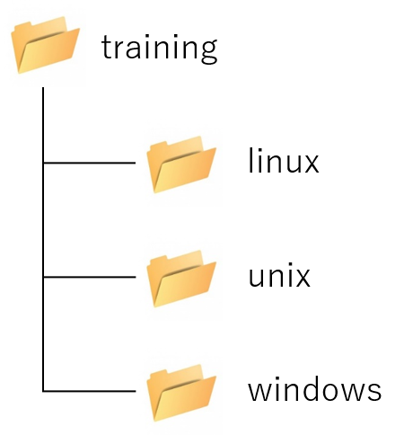

1.ファイルとディレクトリ管理
演習3 ファイルとディレクトリの基本操作
1.ディレクトリの作成と削除
次の図を参照しながら、同じディレクトリ構成を作成してみましょう。

- ホームディレクトリ（/home/student）に移動して、カレントディレクトリを確認してください。
cd
pwd
- trainingディレクトリを作成して、できていることを確認してください。
mkdir training
ls
- カレントディレクトリをtrainingディレクトリに変更して、linuxディレクトリを作成してできていることを確認してください。
cd training
mkdir linux
ls
- unixディレクトリとwindowsディレクトリを作成して、できていることを確認してください。
mkdir unix windows
ls
- ホームディレクトリ（/home/student）に移動して、trainingディレクトリを削除して、削除できたことを確認してください。
cd
rm -r training
ls
- 1回のコマンド実行で画像のディレクトリ構造を作成してください。lsコマンドで「-R」オプションを利用してディレクトリ構造を確認してみましょう。
mkdir -p training/linux training/unix training/windows
2.テキストファイルの作成、表示、編集
geditを使用するので、この演習はTeraTermではなく、仮想マシン上から作業を行ってください。
- ホームディレクトリ（/home/student）に移動して、newfileという名前の空のファイルを作成して、ファイルができていることを確認してください。
cd
touch newfile
ls
- newfileの中身が空であることを、ファイルの中身を確認するコマンドを実行して確認してください。
cat newfile
- 「gedit newfile」というコマンドを実行して、GUIエディタ上で何かテキストを入力して、保存してgeditを終了してください。
- もう一度、ファイルの中身を確認してください。
cat newfile
3.ファイルのコピー
- 「su -」コマンドを実行して、rootユーザのパスワードを入力してrootユーザに変更してください。
su -
rootパスワードを入力
- studentユーザのホームディレクトリ（/home/student）に移動して、「/etc/hosts」ファイルを「/etc/hosts.bak」というファイル名にしてコピーしてください。コピーファイルができたことを確認してください。
cd /home/student
cp -p /etc/hosts /etc/hosts.bak
ls /etc
- 「exit」コマンドを実行して、studentユーザに変更してください。
exit
＜参考＞
ファイルのコピーは、別の言い方をすると、ファイルのバックアップになります。設定ファイル等を更新する際は、必ず、元ファイルを別ファイル名でコピーして、バックアップファイルを作成した上で、元ファイルの更新を行います。もし設定ファイルの更新ミスがあり、システムが動かくなくなったりした場合に、更新前のファイルにすぐ戻せるようにして、迅速なトラブル回避を行えるよう備えておきます。
4.ファイルの移動
- 「su -」コマンドを実行して、rootユーザのパスワードを入力してrootユーザに変更してください。
su -
rootパスワードを入力
- studentユーザのホームディレクトリ（/home/student）に移動して、training/linuxの下にbackupディレクトリを作成して、できたことを確認してください。
cd /home/student
mkdir training/linux/backup
ls -R
- 「/etc/hosts.bak」ファイルをホームディレクトリにあるtraining/linux/backupに移動してください。
mv /etc/hosts.bak training/linux/backup または mv /etc/hosts.bak ./training/linux/backup または mv /etc/hosts.bak /home/student/training/linux/backup または mv /etc/hosts.bak ~/training/linux/backup
ls
- 「exit」コマンドを実行して、studentユーザに変更してください。
exit
5.長文テキストの表示および閲覧
- 「su -」コマンドを実行して、rootユーザのパスワードを入力してrootユーザに変更してください。
su -
rootパスワードを入力
- studentユーザのホームディレクトリ（/home/student）に移動して、「/etc/bashrc」ファイルをlessコマンドを実行して先頭から末尾まで見てみましょう。
cd /home/student
less /etc/bashrc
spaceキーで末尾までスクロール、(END)と表示されたらqキーを押して終了する。
- ホームディレクトリ（/home/student）に移動して、「/etc/bashrc」ファイルをlessコマンドを実行して先「else」という文字列を検索してみましょう。
less /etc/bashrc
/(スラッシュ)elseと入力してnキーを「Pattern not found (press RETURN)」と表示されるまで押し、表示されたらqキーを押して終了する。
- 「exit」コマンドを実行して、studentユーザに変更してください。
exit
6.シンボリックリンク
- 「su -」コマンドを実行して、rootユーザのパスワードを入力してrootユーザに変更してください。
su -
rootパスワードを入力
- studentユーザのホームディレクトリ（/home/student）に移動して、「/sys/dev/block」のシンボリックリンクとして「block」ファイル作成して、シンボリックリンクが貼られていること確認してください。
cd
ln -s /sys/dev/block block
ls -la
※ls -laコマンド結果でblockの箇所がblock -> /sys/dev/blockとなっていることを確認
- 「cd /sys/dev/block」と入力せず、作成したシンボリックリンクを利用して、「/sys/dev/block」ディレクトリまで移動してみましょう。
cd block
ls
※lsコマンドの結果が「cd /sys/dev/block」して、「ls」した結果と同じに結果になります。
- 「exit」コマンドを実行して、studentユーザに変更してください。
exit
前期トップへ戻る
トップへ戻る